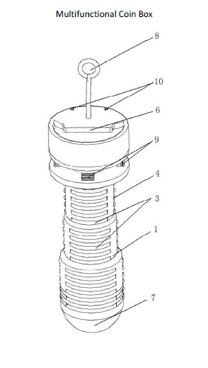

Patent No.201020277530.8 First inventor
The invention displays a multifunctional coin box, which contains body of the box. There are several storing grid cells whose space are round on the body, and on the wall of every grid cell, there are two flexible beads and the place of the two flexible beads’ structure is basic symmetrical and the distance between them is smaller than the diameter of the coin. There is flexible slice on both inner-sides of the storing grid cells’ nozzles which has a distance with the inner-sides and whose place is opposite to the flexible bead. And on one side of the body, there is a bottle opener which is connected with it while a lighting fixture on the other side. Besides, there is an earphone-line device. This new one provides a multifunctional coin box which is easy-taking and multifunctional and can be a decoration after designing.
